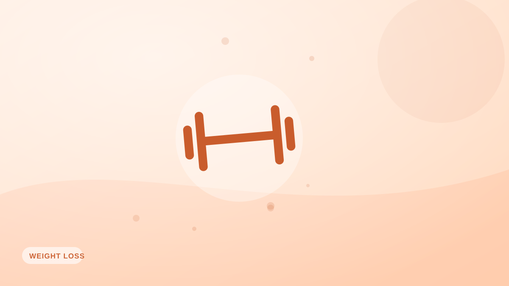

¿A qué velocidad deberías perder peso?
>Más rápido no es mejor. El ritmo ideal de pérdida de peso para proteger el músculo, evitar el efecto rebote y no recuperarlo.

Cuando alguien decide perder peso, normalmente lo quiere fuera para ayer. Pero el ritmo que elijas moldea el resultado: no solo lo rápido que llegas, sino cuánto músculo conservas y si el peso se queda fuera.
El punto dulce
A la mayoría le va mejor perder entre un 0,5 % y un 1 % del peso corporal por semana. Para alguien de 80 kg, eso son unos 0,4–0,8 kg semanales. Lo bastante rápido para mantener la motivación, lo bastante lento para proteger el músculo.
Por qué ir más rápido sale mal
- Pérdida de músculo: los déficits agresivos queman músculo junto con la grasa y te dejan más pequeño pero blando.
- Hambre de rebote: la restricción extrema dispara el apetito y provoca atracones.
- Bajones de energía y ánimo: comer demasiado poco hunde los entrenamientos y la fuerza de voluntad.
- Carencias de nutrientes: con calorías muy bajas cuesta cubrir los micronutrientes.
Cuándo tiene sentido ir más rápido
Quien tiene más peso que perder puede bajar algo más rápido al principio de forma segura, porque un cuerpo más grande soporta un déficit mayor. A medida que te defines, baja el ritmo para conservar músculo y adherencia.
El objetivo real: no recuperarlo
Los estudios muestran de forma consistente que cómo pierdes el peso predice si lo mantienes fuera. Los enfoques exprés rebotan; los graduales y basados en hábitos se sostienen. La paciencia es una característica, no una concesión.
Un ritmo constante es más fácil de mantener cuando registrar no cuesta: Fotocal mantiene visible lo que comes para que tu déficit siga siendo moderado y estable en vez de oscilar entre extremos.
Ideas clave
- Apunta a perder un 0,5–1 % del peso corporal por semana.
- Perder muy rápido cuesta músculo y provoca rebote.
- Con más peso de partida se puede ir más rápido al principio, y luego frenar.
- Cómo lo pierdes decide si se queda fuera.